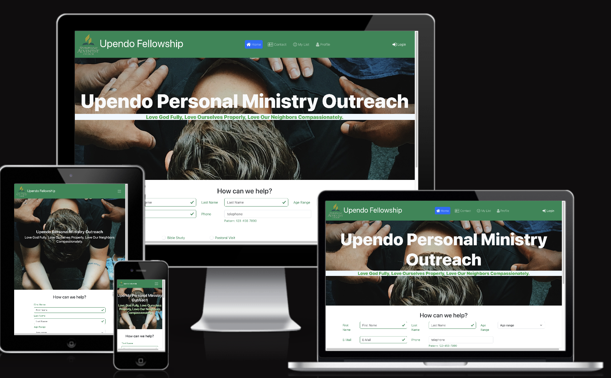

SWOT Analysis
Developed and designed a responsive website for Upendo SDA Outreach, aimed at facilitating community engagement and support. The platform features event scheduling, volunteer sign-up forms, and a resource hub for church activities. Built with modern web technologies, the site ensures accessibility and user-friendly navigation, enhancing the overall experience for members and visitors.